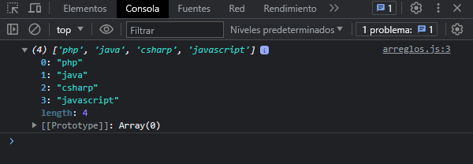
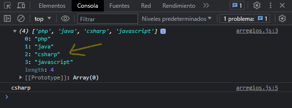
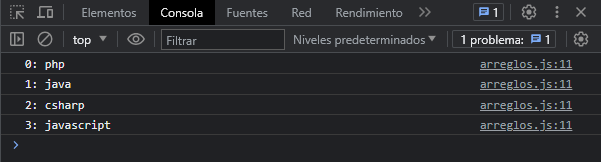

Creando un Array
let lenguajes = ['php', 'java', 'csharp', 'javascript']
console.log(lenguajes)
Para definir un arreglo, le damos un nombre al igual que una variable, pero su valor, para saber que es un arreglo, los datos van dentro de corchetes ([]) y cada valor va separado por comas (,). Cada valor de un array puede ser de cualquier tipo de dato primitivo. Veamos en consola que nos muestra:
Accediendo a elementos
Para acceder a un elemento de un array en especifico, se debe indicar el indice del elemento. Veamos un ejemplo:
console.log(lenguajes[2])
Recordemos que los indices empiezan desde el cero, por lo tanto, el indice 2 tiene el valor de csharp. Veamos el resultado en consola:
Veamos como podemos acceder al primer y ultimo elemento:
console.log(lenguajes[0])
console.log(lenguajes[lenguajes.length - 1])
Para acceder al primer elemento recordemos que los indices de donde se guardan los datos empieza desde el cero, por ende, cero es el primer elemento. Para acceder al ultimo debemos hacer un medio truco, calculando la longitud del arreglo. Para calcular la longitud de un arreglo se puede usar la propiedad .length el cual nos devolverá el total de elementos, en este ejemplo tenemos 4 elementos. Pero el ultimo elemento su indice NO es 4, ya que los indices empiezan desde el cero, entonces, a la longitud del arreglo le restamos un -1, y con eso accedemos al ultimo elemento.
Recorriendo un Array
lenguajes.forEach((el, i) => {
console.log(`${i}: ${el}`)
})
Para recorrer un array se utiliza foreach una estructura repetitiva para recorrer cada elemento del arreglo y poder mostrarle en pantalla. Para poder usarlo se hace por la notación del punto (.) foreach recibe 3 parámetros para poder recorrer un array, el tercer parámetro es opcional, el primer parámetro hace referencia a cada elemento del arreglo, el segundo parámetro hace referencia al indice de cada elemento. Veamos el resultado:
En otra sección veremos los métodos de instancia que podemos usar cuando estemos trabajando con Arrays.